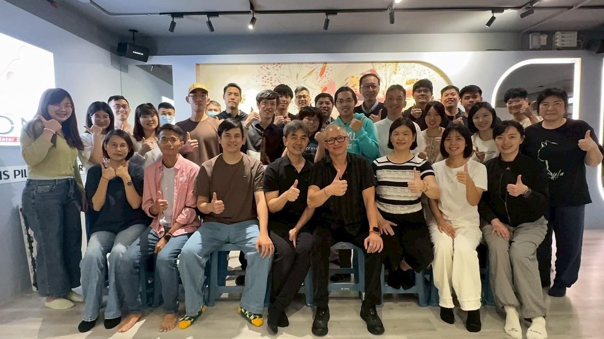
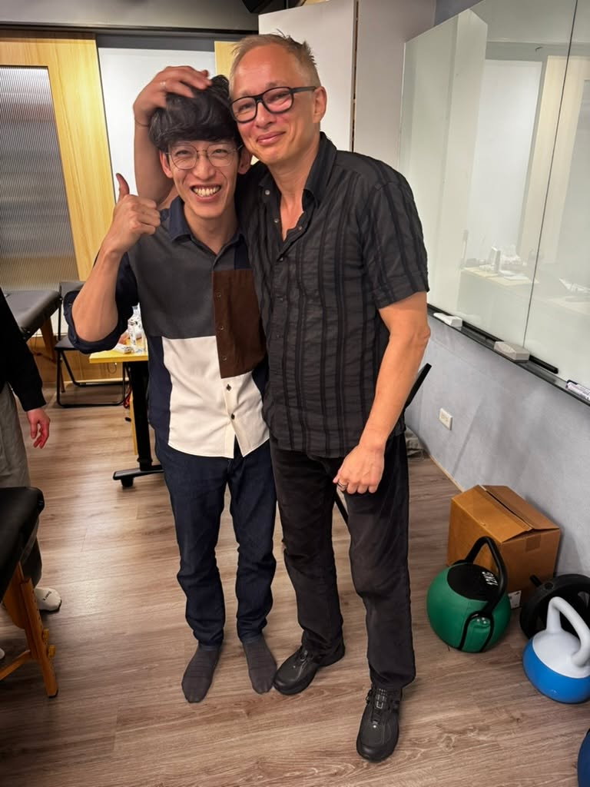
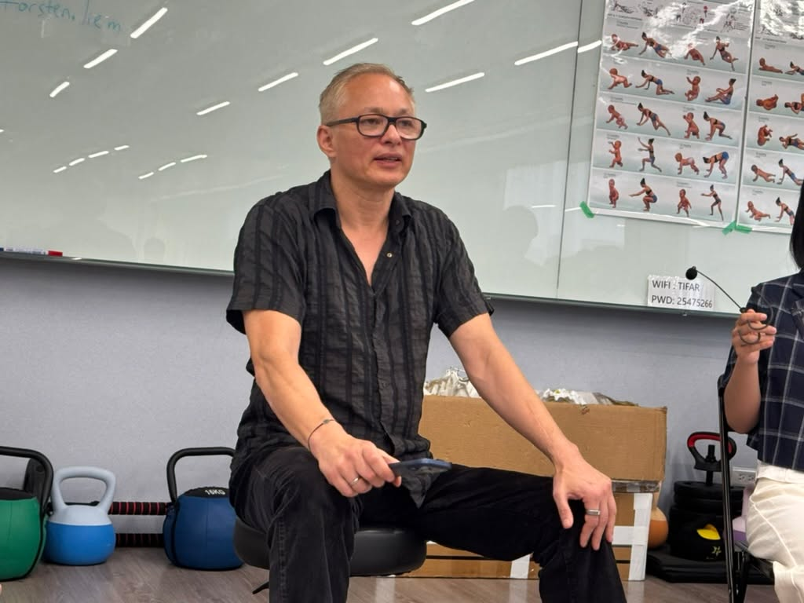
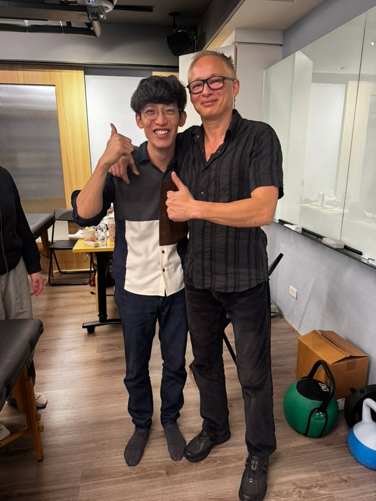

Cranial Osteopathy-Torsten Liem
Cranial Osteopathy-Torsten Liem
歷經充實的四天，這次的 Cranial Osteopathy（顱骨骨病學）工作坊真的是收穫滿滿。
繼先前的 Kenneth Lossing老師的Cranial Bowl 課程後，這次跟著 Torsten Liem 老師的引導，一步步深入人體顱骨骨病學的微觀視角。從每一條骨縫到每一個交界點，都按部就班地進行觸診與練習。這一次，我非常清晰地捕捉到了顱骨深層的微小律動，每一個手法的操作也變得更加扎實，觸診的手感與覺察力確實有了突破性的提升（Level up）！
大師的底蘊，來自於對基礎科學的極致掌握。Liem 老師對於顱骨、高位頸椎乃至脊髓的解剖結構，剖析得極為透徹。更令人敬佩的是，他直接將實證文獻、醫學研究，甚至是組織切片的解剖連結具象化地呈現在我們眼前，讓這門技術完全建立在扎實的學理之上。
然而，在進入實際手法的教學時，老師卻又再三強調：「必須相信自己手下的感受」。客觀的解剖知識與力學原理已經毫無保留地傳授，剩下的關鍵，就是透過不斷地嘗試（Try）與刻意練習，將生硬的知識轉化為指尖的感覺。
能將「極致的理性（解剖與實證科學）」與「細膩的感性（手感與觸覺敏銳度）」這兩個看似互斥的兩端，完美揉合在同一個體上的骨病學醫師，大概非 Torsten Liem 莫屬了。
這四天的課程對我而言，不僅是技術上的升級，更是臨床思維上的一次巨大啟發。帶著這份全新的視野與指尖的體悟回到診間，期許自己能將這份精微的顱骨醫學，更深層地融入未來的臨床治療中，持續精準拆解身體的密碼。
再次感謝 宏甫研究室蕭老師與師母 Sophia Su舉辦這麼棒的顱骨骨病學工作坊，希望Torsten Liem能很快再回來台灣繼續往後面開課！
#顱骨骨病學 #CranialOsteopathy #TorstenLiem #中醫徒手 #持續進修



